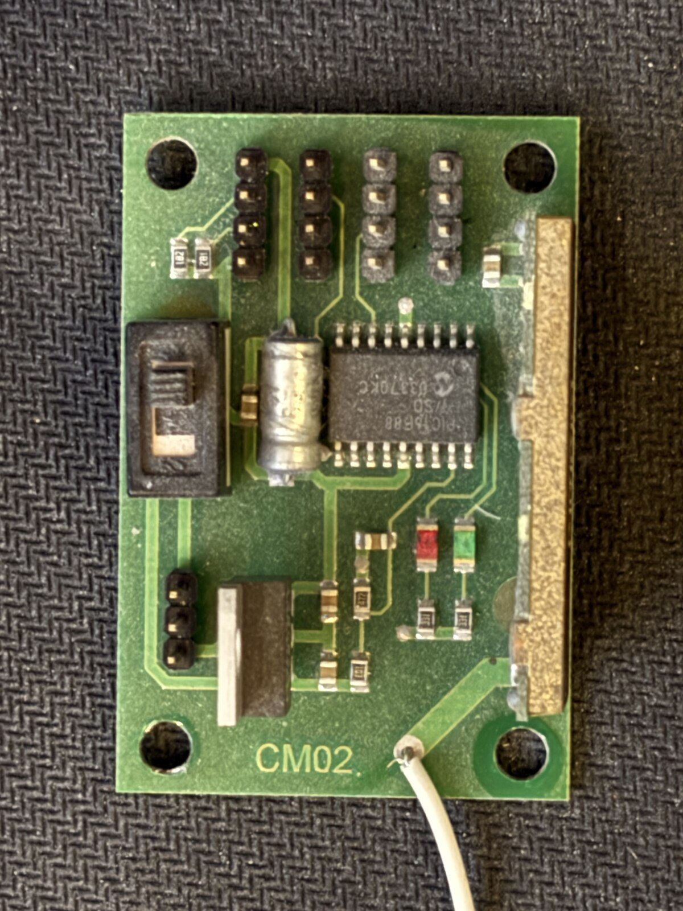
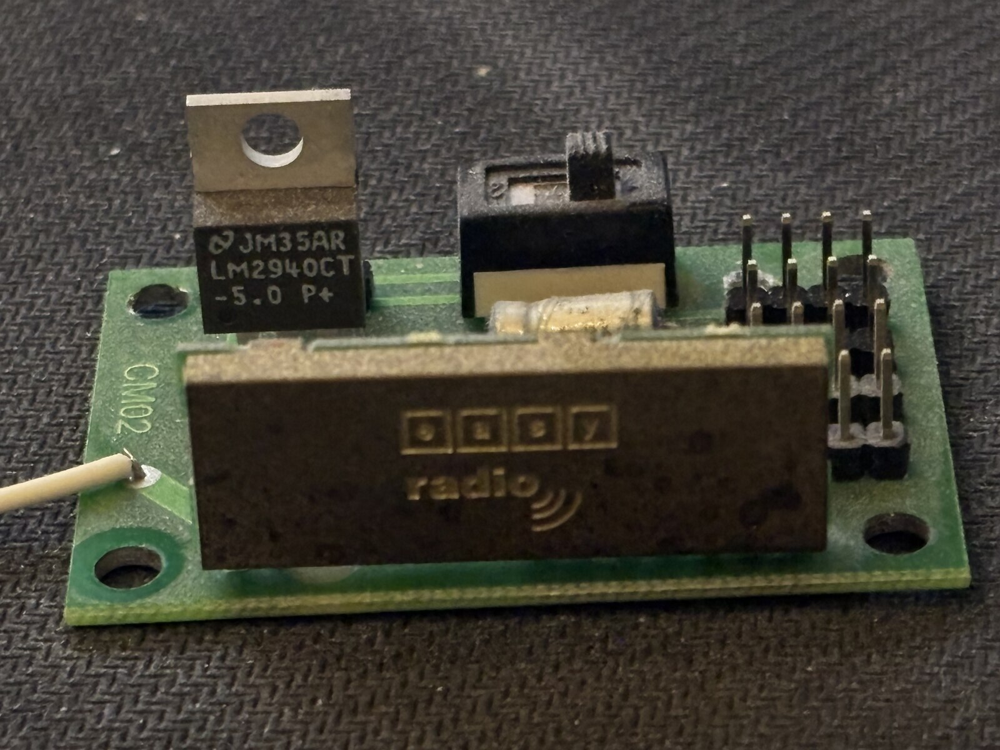

R1
Devantech CM02 radio module
verify×1Small green board silkscreened CM02 on both faces — same board glimpsed
mounted above the MD22 (D1) on the old robot chassis. Now removed and photographed
front and back; identity confirmed, electrical condition still unknown.
- MCU: Microchip
PIC16F688-I/SO, SOIC-14, date/lot code0337OKC(week 37 by Microchip's date-code convention) — same family as the MD22's PIC16F873, and a plausible contemporary of its 2004 code. - RF module: a black brick stamped "easy radio" with a radio-wave logo — a hybrid FM transceiver module from Easy Radio Ltd (UK maker of license-exempt short-range radio modules for the 433/869 MHz ISM bands). Exact model/frequency isn't legible on the visible marking.
- Voltage regulator: TO-220 part marked
JM35AR / LM2940CT-5.0 P+— a National Semiconductor LM2940CT-5.0, a 1 A low-dropout 5 V linear regulator. Its presence means the board takes a higher unregulated input and makes its own 5 V locally for the PIC and RF module (LM2940 dropout ~0.5 V; works from roughly 5.5 V up to a 26 V absolute max). - Small black canister part just ahead of the regulator/RF module — possibly a crystal, resonator, or inductor for the RF stage; not identified.
- 4-position black slide/DIP switch on the top face, next to the header banks — likely sets channel/address/mode as on the MD22, but function is unconfirmed; don't assume the current setting means anything until checked.
- Red and green SMD LEDs — likely TX/RX or link/power status indicators.
- Gold card-edge contacts along the board's right edge — suggests this board was meant to plug into an edge-connector socket rather than only using the pin headers. Worth figuring out what it mated to on the original chassis.
- Four groups of 4-pin through-hole headers on the top face (16 pins total) line up with pins protruding on the back face near the RF module — likely power, ground, serial TX/RX, and antenna feed, but the pinout isn't mapped yet.
- A single thin wire is soldered to a corner via and trails off-board — almost certainly the antenna (simple wire whip). Don't shorten, coil, or power the module with this disconnected; RF power stages can be damaged driving an open/mismatched load.
To verify:
- Identify the Easy Radio module's exact model and operating frequency
- Map the 16-pin header pinout with a multimeter before connecting anything
- Determine the DIP switch function empirically, or via any Devantech docs found online
- Confirm the regulator's input voltage range before applying power
- Never power the board with the antenna wire disconnected
{kind=link}

{kind=link}
